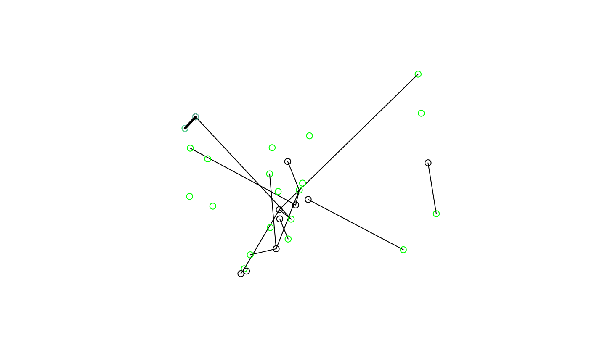

Convert OD data into geographic 'desire line' objects
od_to_sf( x, z, zd = NULL, odc = NULL, silent = FALSE, filter = TRUE, package = "sfheaders", crs = 4326 ) od_to_sfc( x, z, zd = NULL, silent = TRUE, package = "sfheaders", crs = 4326, filter = TRUE )
Arguments
| x | A data frame in which the first two columns are codes representing points/zones of origin and destination |
|---|---|
| z | Zones representing origins and destinations |
| zd | Zones representing destinations |
| odc | A matrix containing coordinates representing line start and end points |
| silent | Hide messages? |
| filter | Remove rows with no matches in |
| package | Which package to use to create the sf object? |
| crs | The coordinate reference system of the output, if not known in |
Examples
x = od_data_df z = od_data_zones desire_lines = od_to_sf(x, z)#>#>#>desire_lines[1:3]#> Simple feature collection with 7 features and 3 fields #> Geometry type: LINESTRING #> Dimension: XY #> Bounding box: xmin: -1.564756 ymin: 53.77475 xmax: -1.517695 ymax: 53.81763 #> Geodetic CRS: WGS 84 #> geo_code1 geo_code2 all geometry #> 1 E02002384 E02006875 966 LINESTRING (-1.54473 53.809... #> 2 E02002404 E02006875 1145 LINESTRING (-1.51871 53.792... #> 3 E02006875 E02006875 1791 LINESTRING (-1.546024 53.79... #> 4 E02006876 E02006875 1035 LINESTRING (-1.517695 53.77... #> 5 E02006861 E02002392 453 LINESTRING (-1.564756 53.81... #> 6 E02006875 E02002392 286 LINESTRING (-1.546024 53.79... #> 7 E02002392 E02006875 753 LINESTRING (-1.561391 53.80...#> Warning: plotting the first 9 out of 10 attributes; use max.plot = 10 to plot alldesire_lines_d = od_to_sf(od_data_df2, od_data_centroids2, od_data_destinations)#>#>#>o1 = od_data_centroids2[od_data_centroids2[[1]] == od_data_df2[[1]][1], ] d1 = od_data_destinations[od_data_destinations[[1]] == od_data_df2[[2]][1], ] plot(desire_lines_d$geometry)n = 7 on = od_data_centroids2[od_data_centroids2[[1]] == od_data_df2[[1]][n], ] dn = od_data_destinations[od_data_destinations[[1]] == od_data_df2[[2]][n], ] plot(desire_lines_d$geometry)